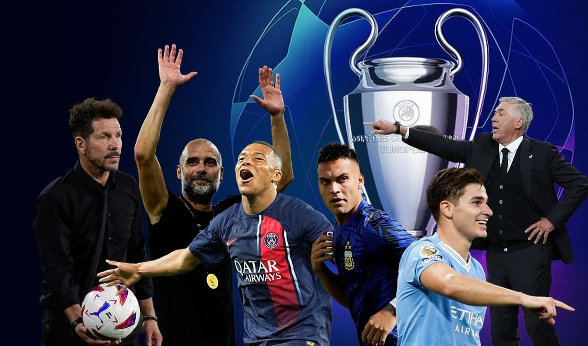

Mitre se consagró campeón provincial
Rocamora está de fiesta. No hubo lugar para sorpresas en el estadio Juan Adelino Juritsch. Bartolomé Mitre mostró total autoridad y con una nueva victoria sobre River de Villa Bonita, esta vez por 3-2, se consagró como el nuevo campeón misionero de manera invicta y ahora ocupará el trono que dejó vacante Guaraní Antonio Franco.
River sumó de a tres y se prende a la pelea
El Millonario venció como local 3 a 1 al Arse, con tantos de Miguel Borja (2m. PT y 30m ST de penal) y Nicolás De La Cruz (28m PT); mientras que Juan Bautista Cejas (13m ST) descontó para el visitante, en un encuentro válido por la cuarta fecha de la Zona A.
Ya sin Messi inicia la fase de grupos de Champions League
Los equipos ponen primera. 32 equipos que, más allá de las diferencias económicas y futbolísticas, irán por la conquista de Europa. De levantar la preciada Orejona. Sí, para el disfrute de todos los futboleros, este martes comenzará una nueva temporada de Champions League. Mejor dicho, ya había arrancado (con las rondas preliminares), pero en esta jornada comenzará empezará la esperada instancia de grupos. Y será también especial porque será la primera edición sin Lionel Messi.
Juegos Panamericanos: los misioneros tienen fecha de debut
Se conoció el calendario de Santiago 2023 y los cuatro misioneros clasificados hasta el momento ya tienen agenda. Agustina Quirós será la primera en competir, el 21 de octubre. Después será el turno de Ricardo Báez, Mauri Lovera y Analía Zacarías